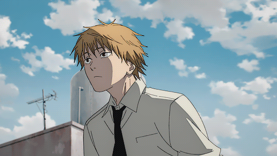
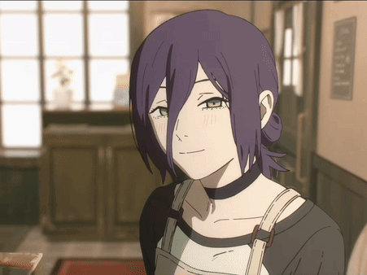
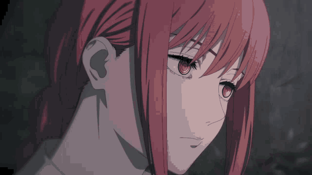

Chainsaw Man: O Filme - Arco da Reze🪚💣

Informações:
Gênero: Animação, Terror e Aventura
Data: Outubro de 2025
Duração: 1h40min
Trailer
O trabalho original é um mangá feito por Tatsuki Fujimoto.
Sinopse: Denji vive como o temido Homem-Motosserra, um jovem com coração de demônio que integra a Divisão Especial 4 de Caçadores de Demônios. Após um encontro marcante com Makima, a mulher de seus sonhos, ele busca refúgio da chuva e acaba conhecendo Reze, a misteriosa atendente de um café.

Personagens principais:
Denji

O protagonista, com o poder do Dêmonio Motoserra, ele é muito forte nas lutas, mas muito lerdo para certas coisas.
Dublador: Eric Bougleax
Reze

Após o Denji, é a personagem mais retratada nesse filme, seu passado é sombrio e o seu objetivo é conseguir o coração do Denji, mas em qual sentido?
Dubladora: Aline Guioli
Makima

Uma personagem que aparenta ser amigável à primeira vista, mas esconde um interesse obscuro com um poder avassalador. É a chefe do Denji no trabalho.
Dubladora: Luísa Viotti
Power

Uma possessa pelo Demônio do Sangue, trabalha junto ao Denji, gosta de gatos e de sangue obviamente. Apesar de muitas brigas, é uma amiga do Denji.
Dubladora: Pamella Rodrigues
Aki

Um homem muito habilidoso em caçar demônios. Denji e Power moram no apartamento dele, então ele tem de tomar de conta deles, apesar de ser fechado e duro com eles dois, no fundo, tem simpatia com eles mesmo sendo não humanos.
Dublador: Sérgio Cantú